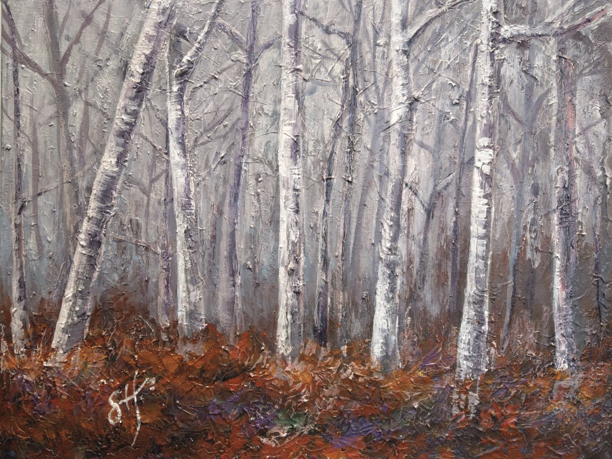
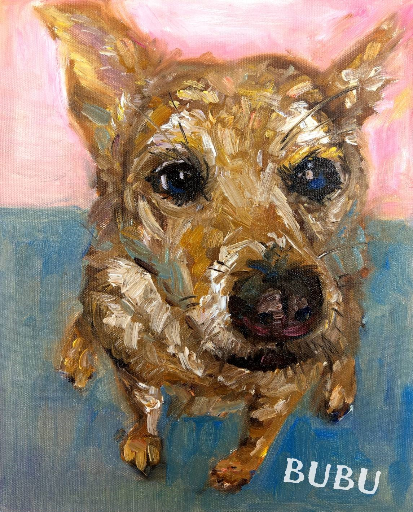

Wonderful rain
這是「向大師致敬—奈良美智仿作系列」之一。有些時候不喜歡雨天，但有時卻特別喜歡雨天。也許是因心情而定。那天下了一場舒服的雨，心情也跟著輕快了起來。

Who ate the bird?
這是「向大師致敬—奈良美智仿作系列」之二。一位有著貓兒、貓尾、鳥身的小孩。究竟牠是貓還是鳥？還是誰吃了貓；又是誰吃了小鳥兒呢？

About me
這是一幅關於我的自畫像。一位女孩，在自己的房間裡，手上拿著畫筆，為自己畫上繽紛的色彩。也許對未來充滿未知與迷茫，但相信喜歡畫畫的心能讓人生變得五彩繽紛。

The forest
一直以來很喜歡森林，帶有著一股神秘、一股靜謐。這是我心中寧靜的森林。你/妳的心中是否也有一座屬於自己，讓自己靈魂能夠遨遊其中的森林？

Consciousness
沒有草稿，隨心所欲所留下的筆跡。這幅畫紀錄了創作當下的意識、心情，無法捉摸，亦無辭藻能夠解釋。每一筆畫都是一種紀錄，每一筆觸都獨一無二。

The bird hat
小丑喜歡音樂，他對小提琴情有獨鍾。但是他的琴發不出樂聲。於是一群小鳥依附在小丑的帽子上。每當小丑演奏，鳥兒為他而唱，為他高歌。

Bubu
Bubu是實驗室裡的狗。每當有人帶食物，Bubu就會跑過去，睜著水汪汪的大眼睛，期待著。

The Minion
我喜歡小小兵，喜歡蒙德里安的格子畫系列創作。當兩者碰在一起，變成了另一種不同風格。